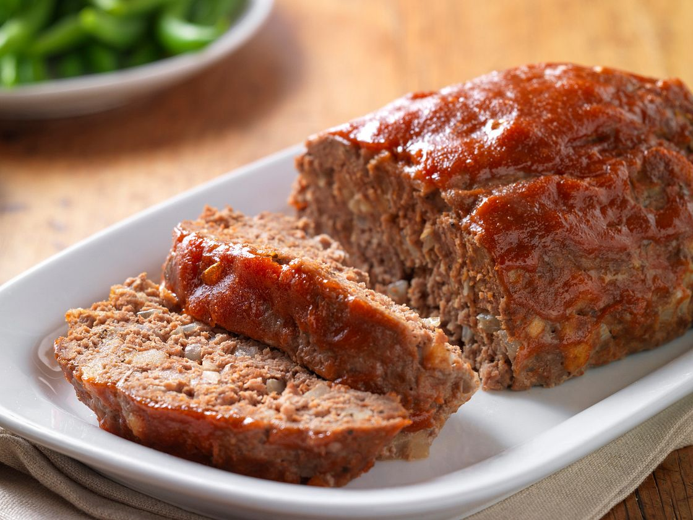

Meatloaf

Description
What's better than a hearty meatloaf? This is a recipe that's easy and foolproof. No bells and whistles - just a few ingredients including beef, egg, bread crumbs and a simple tomato-based topping.
1 1/2 lbs. Ground Beef
3/4 Cup Panko Bread Crumbs
3/4 Cup Ketchup
1/2 Cup Minced Onion
1 Egg
1 tbsp. Worcestershire Sauce
2 tsp. Minced Garlic
1 tsp. Dried Thyme
3/4 tsp. Pepper
1/2 tsp. Salt
Steps
Preheat oven to 350°F. Combine Ground Beef, bread crumbs, 1/2 cup ketchup, onion, egg, Worcestershire, garlic, thyme, pepper and salt in large bowl, mixing lightly but thoroughly. Shape beef into 8 x 4-inch loaf on rack in aluminum foil-lined broiler pan.
Place on upper oven rack in 350°F oven. Bake 45 to 55 minutes, until instant-read thermometer inserted into center registers 160°F; brush with remaining 1/4 cup ketchup during last 10 minutes, if desired. Let stand 10 minutes. Cut into slices.
Back to Recipe Selection